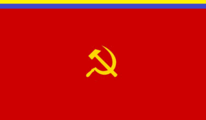

F.A.R.C.
 De: La Frikipedia, la enciclopedia extremadamente seria.
De: La Frikipedia, la enciclopedia extremadamente seria.
Dos hombres de las farc saludandose
Las F.A.R.C. (Fuerzas Armadas Raspadoras[1] de Coca) son una organización guerrilera colombiana conformada por un grupo de personas sin autoestima, esquizofénicos y con grandes problemas ligados al amor familiar, que casi siempre estan en la selva Comiendo personas animales salvajes, con diarrea, anemia y otros problemas ligados al hambre. Estos pobres individuos además de poseer una pequeña obsesión con la película caníbal, el 90% de ellos son hombres, el 8% son mujeres queriendo ser hombres y el otro 2% no se sabe.
La Faruchos estos el gobierno dice que estan infiltrados en todo, hasta en la casa de Vill Bobon gay. Se dice que se puden exterminar facilmente que un mongolo con sifilis con un solo ojo puede con ellos y que estan derrotadas.
Historia
Eran los años de la revolucion Cubana y el señor Maunuel Marulanda alias "Tirofijo" (porque le apuntaba bien a la tasa) vio un video en internet de Fidel y el Che cogiendo y haciendo cosas feas, pero muy feas, marulanda despues de eso se reunio con unos amigos y se fueron a joder a ancianas con M-16 y granadas, las ancianas quedaron vueltas mierda claro, desde ahi Marulanda fue buscando a alguien que lo hiciera feliz como en el video del Che y Fidel, se le sumaron mucha gente a su guerrilla, pero nunca encontro lo que queria, porque los del video hicieron cosas muy pero muy feas y nadie queria hacerlo.
El pedacito de tierra
 La bandera que propuso las FARC
Como todos sabemos Pastarana hacia cosas raras con Marulanda y el resto de esos manes, o si no para que se la pasaba hablando reuindos con ellos, ja no me digan que era para solucionar el conflicto, si ese era otro guerrillero, el punto es que el ex-presidente Pastarana les dio un terreno mas o menos del tamaño de Dinamarca a la guerrila, por agradecimineto a Marulanda de algo muy secreto, donde ellos se hicieron tremendo alboroto con mucho sexo drogas y musica Popular siguieron jodiendo ancianitas y niños pequeños con M-16 y granadas.
Cómo obtienen su Dinerillo
El videojuego lanzado por Monolith Productions, un FPS donde encarnamos a Tirofijo
Según una información que el Gobierno de play station 3). Según esas mismas fuentes, la prostitución (ellos mismos se paran en la 33 después de las 10 de la noche) les regalan a las FARC más de 600 millones de Wanda Nara.
Además, su mercado principal es del de MandaHarina a la USA, sizas, esa harina dique Haz de Oros, sólo que el contenido está pequeñamente alterado por quienes lo fabrican, introduciendo una pequeña dosis de polvo de pipisilina intravergosa. No cabe mpas que decir que las FARC son un grupo dotado de ersonas malas que no hacen sino daño a los que los rodean y los que les pagan por hacerles petes y terminan con SIDA
La muerte de Miro fijo
Él era el líder máximo de las FARC y proclamaba un mundo de paz y amor gay ,y que solo podiamos llegar a eso a través de tirar cilindros bombas a travez de catapultas a los campesinos y asi hacerle coger admiracion de el pueblo Locombiano. Aprendió a disparar un rifle cuando sólo era una feto y revolucionó a todos los espermatozoides para que no fueran al ovulo para él poder ir sin problemos. Se dice entre sus amigos de siempre que tubo una gran admiracion por los hombres tanto así que sólo dormia con ellos todas las noches del año. La versión oficial del gobierno es que le cayó un meteorito y murió por la radiación, otros que dicen que estaba durmiendo con unos de sus amigitos nocturnos que le dio tan furte y con tanta pasión que murió, en mi opinion el vio la recompensa de 10000000000000000...0$ dólares que había por su cabeza así que se la cortó él mismo para cobrar la recompensa.
Un año después de su muerte, las FARC escribe:
En todos las orgías donde él participo, siempre nos penetró la lucha por la paz con dureza y erección, la virilidad de ser gay-rrilleros donde la reina es él, también inculcó muy a fondoo la capacidad física y moral para comPENETRAR todas las cavidades sin vacilación de la anatomía guerrillera; ni el más intenso dolor, hambre, sueño y cansancio nos impide culear , así fue la intensa vida de nuestro comandante Marulanda, con firmeza enfrentó a la cabeza del pene de sus camaradas a enemigos poderosos con grandes ortos y siempre salió triunfante. Su pensamiento es el de las FARC EP, por esa razón, el Estado Mayor Central, el Secretariado y toda la guerrillerada estamos unidos en un gran matrimonio múltiple gay, la vamos actualizando a la luz del Mariquismo-Lamemelpipismo de acuerdo a la realidad Chavista
La muerte de Raúl Reyes
Conocido desde su infancia como Luis Edgar Devia o Luisito, era un revolucionario cabecilla de las FARC que solía jugar desde muy pequeño con armas peligrosísimas, se dice, que son capaces de hacer que Chuck Norris parpadee, lo cuál es inaudito pues, sólo debe parpadear cuando él lo desee.
Así que enfadado con esto, Chuck Norris decidió viajar a Ecuador a eliminar a este imbécil (en este tiempo, Luisito estaba en Ecuador) de una vez por todas. Con su patada mortal de doble giro invertido directo a la nuca, fué acribillado de una vez por todas el cabecilla gay de las FARC. Después de el fácil combate para Chuck, quedaron enormes cráteres en la tierra Ecuatoriana, lo que no le gustó mucho a Correa, el presidente de Ecuador, quien le echó la culpa a Alvarito Uribito y desencadenó que Chávez volviése a hablar más en Televisión, cosa que nos disgusta a todos, porque habla como mico costeño.
No se conocen aún las razones por las cuales Chuck Norris no ha acabado con el insolente de Correa que no hizo sino desencadenar unas 987979797979797767676656 palabras más de nuestro queridísimo amigo Chávez en Televisión.
Significa:
- Fuerzas Armadas Rafael Correa
- Fuerzas Armadas Raspando Coca
- Folladero anónimo reeee cacorro
- Fornicadero anal que rompe cañas
- Fetos autistas recibiendo caca
- Fascismo aislado rastrero corrompido
- Flagelos apretados rateros cagados
- Falta atontada de regueton( o como se escriba es mierda) cucarachera
- Fastidiosos atolondrados regados catre..hijos..de..puta
- Forrados ahuyentados ruidosos catre infelices
- Faroludos acampados reproducidos con café…
- Fuerzas ahuecadas retoñitos camioneros
- Flacos acojonados remaricas cachones
- Flojos atravesados rezando por ser caimanes…
- Filibertos antipáticos reparando cosas…
- Fuerzas Autónomas Recontra Culeadas
- Frente de Acopio de Redbull y Coca
- Fernando Adolfo Ramirez Cordoba (Esposo de Henrrieta R. Hipo (H.R.H) falsa reina de inglaterra según Homero Simpson.
- Fuerzas Animales Roedores y Caninas
- Feos Anti Religión ChuckNorriana (todo un descaro)
- Fuimos A Robar Carros
- Facistas Anarquistas Rojos Carechimbas
- Fabrica de Arepas Rellenas Colombianas
- Fortaleza Autentica Revolucionista Culeadora.
- Federacion Americana para Rusos Culiadores
- Fuerzas Armadas Re-malparias Chaviztas
- Fundación Acuífera para los Rios de Colombia
Otra información
- La organización está financiada por Chávez.
- Su vocera internacional es Piedad Córdoba.
- Adoran a Cerebro.
- Su saludo oficial es: "Hola amiguito!".
- Estan bajo el comando de predito alias manuel marulandia o tira...fijo
- Estan perdidos en 24 de los 32 departamentos de Colombia y en toda Venezuela
- Viven a base de los polvitos blancos
- Están perdidos mas no escondidos.
- Quieren ser algún día chamanes.
- Solo les interesa
culear tumbar el gobierno.
- Les gustaría ver televisión.
- También les gustaría tener una aspirina contra la diarrea.
- La mayoría de integrantes son
violadores campesinos.
- Les encantaría tener un anti-mosquitos.
- juegan poker.
- les gusta apostar gente.
- quieren una ducha de agua caliente.
- su jefe se hace llamar tirofijo.
- el jefe de ellos tira..fijo.
- el jefe de ellos también fija y tira.
- el jefe de ellos de vez en cuando tira pero no se fija.
- el jefe de ellos de vez en cuándo tira.
- el jefe de ellos tira y no se fija a quien le pega.
- el jefe de ellos no se fija con quien tira.
- le han dado por culo a Hugo y a Correa.
- revolucionaron el sadomasoquismo.
- matan gente para demostrar su amor.
- todos los farucos tienen nacionalidad venezolana.
- les encanta viajar, por eso tienen oficinas en venezuela ecuador, bolivia, nicaragua y todos los pises terroristas "amigos" de uribito.
- Los pobrecitos no tienen para una biblioteca pero si tienen para fusiles y C4.
- su jefe mas sucio, un verdadero...., mono jojoy le colocaron jojoy por que tiro fijo le dio por el c... y entonces el mono dijo "JOJOY!"
- los pocos que los apoyan en Colombia o son borrachos o son los típicos drogadictos que van a hacer pantalla a las universidades públicas (facultades de filosofía principalmente).
- los que los apoyan en el extranjero solo quieren plata fácil ya que en sus pises de origen son una extrema basura a la izquierda.
- Venden camiseticas en Dinamarca y matan gente en el Cauca (tan bacano, me rimó)
- Gustavo Petro, amiguito de los farucos, se le brotaron los ojos por que el monito(jojoy) de dio por el culit......
- Que si Chavez por aqui, que uribito por aca y nosotros siempre pagando un Jojoy.
- Les gusta la coca, por eso la venden.
- el 97% de los colombianos quiere a esta plaga terminada y aun asi ellos se niegan a desaparecer.
- Jojoa era guerrillero hasta que conoció el movimiento EMO.
- Alejandro Montoya es vecino de Chávez.
- Piedad Córdoba y Chávez tienen un amorío tan secreto, que todos sabemos.
- El Mono Jojoy era conocido antes como el Mono Jojoa.
- Tiro Fijo es parte de una famosa pandilla llamada los Meteme Sacalatrucha.
- Su Mayor Meta es Obtener una Death Note.
- De Cuando en vez hacen "Alocadas Fiestas privadas" con su amiguito Chavez.
- Generalmente no pasan del metro y medio.
- Su Camuflado en realidad es Cosplay.
- Quieren liberar a Colombia de los de USA ((... Gringos)), pero se divierten demasiado vendiéndoles sus productos didácticos.
- Le Temen a las Arañas.
- El guante de pajas es comunal...
- ...Es Cierto!!
- Hay ciertas leyendas urbanas que relatan que manuel maulanda fue el primer hombre que se autodesconecto de la matrix.
- Son financiados por
actores porno un castor Supremo
Grandes logros
- Tirofijo se acostó con Pastrana este le reclamó luego por abusar de él, de su buena fé
- Quebrar el país.
- Matar un montón de gente.
- Degollar niños.
- Secuestrar.
- lograr hacer un barney bomba.
- lograr hacer un perro-bomba.
- lograr hacer una vaca-bomba.
- lograr hacer un burro-bomba.
- lograr hacer un mono-bomba.
- lograr hacer un presidente-bomba.
- lograr hacer una bomba-bomba.
- lograr hacer un condon-bomba.
- lograr hacer un pene-bomba.
- lograr hacer un muerto-bomba.
- lograr una masacre con un solo cilindro(bombona).
- lograr hacer una abeja-bomba.
- lograr una caca-bomba.
- como lograr el odio de un pais en solo 50 años.
- lograr vivir con diarrea mas de 16 meses.
- dormir sin un colchón.
- tratar como una mascota a una sanguijuela.
- Como embarazar a un hombre.
- Mutilar gente como diversión.
- Vivir sin la televisión.
- Darle "buena fama" al Putumayo.
- Entenderse con Chávez
- como lograr la nacionalidad venezolana en un paso
- como picarselas de malo mientras se es una basura
- como engañar a medio mundo
- como traquetear y que paresca bueno
- como hablar como si se supiera de que se esta hablando
- como lograr un despeje sin nada a cambio
- como secuetrar a 20 personas con tan solo un cortauñas
- Estar perdidos toda la vida en la selva
- Escribir el libro: "Cómo nos perdemos en la selva."
- Escribir el libro: "Los secretitos sucios de Las Farc."
- Escribir el libro: "Cómo crear un condón usando una hoja de árbol."
- Escribir el libro: "Cómo no contraer gonorrea en la selva."
- Escribir el libro: "el poco sexo te vuelve faruco"
- Escribir el libro: "la masturbacion mental en las universidades(como engañar a los universitarios?)"
- Escribir el libro: "el che era bueno, era un simbolo sexual gay".
- Escribir el libro: "soñar no cuesta nada, secuestrar tampoco".
- Escribir el libro: "Soy faruco, ¿y qué?".
- Escribir el libro: "Nacionalidad Venezolana para dummies".
- Escribir el libro: "60 años de asesinatos para nada".
- Escribir el libro: "solicitud standar ser chavista".
- Escribir el libro: "conquistar a un presidente".
- Escribir el libro: "el final esta cerca, el nuestro".
- Escribir el libro: "constitucion del polo democratico".
- Escribir el libro: "introduccion al partido liberal".
- Escribir el libro: "me acoste con chavez que hago"
- Escribir el libro: "soy gay y me gustan los castores"
Alias Conocidos En La Tribu
- El Culo Peluo
- El Cara E Jeba
- Dady Yanke
- Chávez
- José El Que Te Cogió Y Se Fue
- El Cara E Loca
- Bigote De Perro
- La Llorona
- El Pikachu
- El Chupa Cabras
- Lady Gaga Parcero
- Boca De Vagina
- El Cabeza De Grosería
- El FrikiRaptor
- Ricky Martin De La Selva
- Mono Jojoy
- El Chaka-Chaka
- El Indio Chino
- Guisinillandel
- Fidel Castro Junior
- Perolito & Escarlata
- Jack Sparrow
- Hitler Negro Y Judio
- Tragavenados
- Lengua Venenosa
Y Otros Locos Con Nombres De Criaturas Peligrosas Conforman La Tribu.
Notas
- ↑ Raspar es quitar la hoja de coca de la planta para su producción.
Autor(es):
- Fordus
- Roms
- Nadaquever
- Diegocon13
- Pirulee
- Pecador
- Nestorjaviersolera
- AlemanH
- Kmilo9401
- Veni Vidi Vici
Frikipedia 2005-2016, Licencia
GFDL 1.2 - Extraído por FrikiLeaks